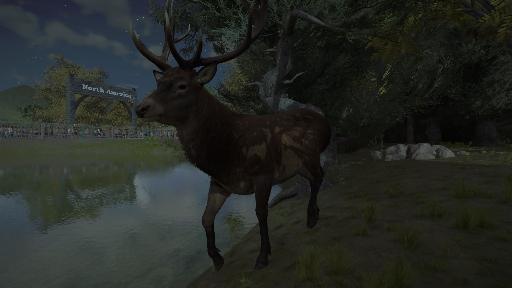
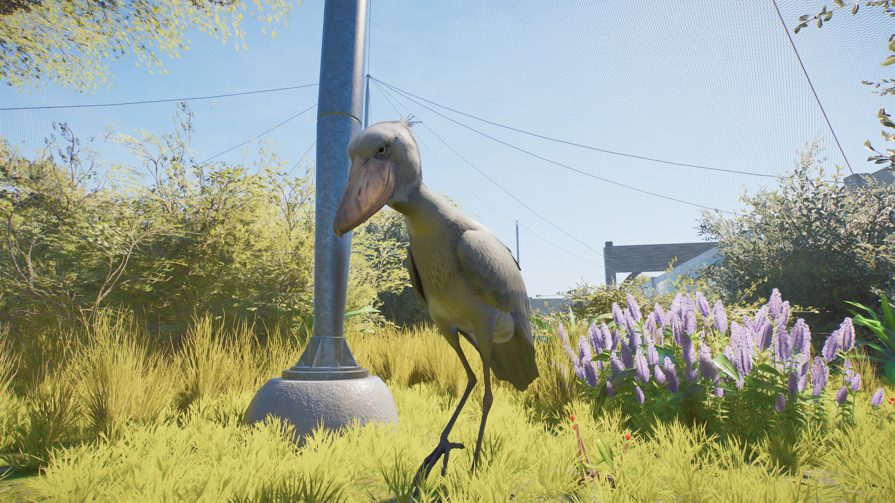

🌱
Protect Nature
Celebrate habitats and explore why healthy ecosystems matter to wildlife and people.
A place inspired by wildlife, shaped by imagination and driven by a love for all living creatures.
WildWorld Zoo is a Planet Zoo 2 project built around a simple idea: create an immersive, naturalistic zoo that celebrates wildlife and inspires people to care about the living world.
From carefully planned habitats to our journey through earlier zoo projects, this is a world that continues to grow.
Read Our Journey
Our fictional zoo project is inspired by three important principles: learning about wildlife, respecting animal welfare, and understanding the natural world.
Celebrate habitats and explore why healthy ecosystems matter to wildlife and people.
Make wildlife education welcoming, interesting and accessible to visitors of different ages.
Put animal welfare and responsible care at the heart of our zoo-building philosophy.
WildWorld Zoo didn't appear out of nowhere. It grew from a series of creative projects, experiments and new ideas in Planet Zoo.
A major Planet Zoo 1 project that reached its finale and became part of the journey toward new zoo-building ideas.
An early Planet Zoo 2 project that explored a new zoo identity, website ideas and animal-care storytelling.
A concept inspired by temperate woodland landscapes, naturalistic habitats and wildlife conservation.
A realistic woodland zoo project that helped develop ideas for immersive habitats and a connected zoo website.
A fresh chapter: a zoo project designed to bring together wildlife, creativity, education and a love of animals.

Every project taught us something new. WildWorld Zoo is the next step, with its own identity and room to grow.
Some animals become part of a zoo's history in a way that goes far beyond a habitat. Naruto's story is one of the personal stories behind this journey.
Naruto is an aardvark whose story includes a battle with cancer. At one point, we thought he had died. But his story did not end where we believed it had.
This page is reserved for the full story of what happened to Naruto, told in the right order and with the details that make his journey special.
Discover the incredible animals that call WildWorld Zoo home. Every species has its own story, and this is where their journeys begin.

The Red Deer holds a special place at WildWorld Zoo. As our centrepiece species, these magnificent deer represent our passion for wildlife and the natural world.
Red Deer live across parts of Europe, Asia and North Africa. They inhabit a variety of environments, including woodlands, grasslands, heathlands and mountainous regions. They can use forests for shelter and open areas for feeding.
Red Deer are herbivores. They feed on grasses, leaves, herbs, shoots and other vegetation. Their diet changes with the seasons and the food available in their environment.
Red Deer are social animals. Females and their young often form groups, while males may form separate groups outside the breeding season. During autumn, males enter the rut, roaring and competing with rivals for access to females.
Red Deer are classified as Least Concern globally by the International Union for Conservation of Nature (IUCN). However, individual populations can face local pressures from habitat changes, hunting and conflicts with human activities. Protecting suitable habitats helps support healthy populations.
At WildWorld Zoo, our Red Deer help us celebrate the importance of understanding wildlife and respecting the natural environments animals depend on.

Meet one of Africa's most remarkable birds! The Shoebill is famous for its enormous shoe-shaped bill, prehistoric appearance and incredible patience when hunting. It is a very special addition to WildWorld Zoo.
Shoebills live in tropical freshwater wetlands in central and eastern Africa. They are particularly associated with large swamps, marshes and areas of papyrus vegetation. These wetlands provide the shallow water and vegetation that Shoebills need to hunt and nest.
Shoebills are carnivores. Their diet mainly includes fish, particularly lungfish and other fish found in shallow wetlands. They may also eat amphibians, reptiles and other small animals.
Shoebills are usually solitary and remarkably patient hunters. They can stand almost motionless for long periods, watching the water before suddenly striking at prey. They are also known for bill-clattering, a loud sound produced by rapidly clapping their bills together.
Shoebills are classified as Vulnerable on the IUCN Red List. Their populations face threats including wetland habitat destruction, disturbance, hunting and illegal capture. Protecting freshwater wetlands is essential for their future.
At WildWorld Zoo, our Shoebill helps visitors discover the importance of African wetlands and the remarkable wildlife that depends on these habitats.
This section is ready for your real or fictional zoo staff. Profiles can be added as your project develops.
Planning, development and the overall zoo vision.
Animal health, veterinary care and welfare.
Daily care, enrichment and habitat management.
These are role categories, not named staff profiles. Names and biographies can be added later.
Follow the builds, habitat tours and progress as the zoo comes to life.
Channel: TheShadowBonnie4321
Replace the YouTube link with your exact channel URL when ready.
Updates about the development of WildWorld Zoo will appear here.

WildWorld Zoo begins its journey with a new identity.

Naturalistic design and wildlife education inspire the project.

New announcements will be added as the zoo develops.
These are starter news cards, not dated announcements. Edit or replace them with your real updates.
WildWorld Zoo is currently presented as a Planet Zoo 2 creative project. This website is a project showcase, not a real-world ticketing or booking service.
More visitor information can be added if you decide to create fictional opening times, a map or a visitor guide.
Location: To be announced
Opening times: To be announced
Tickets: Not currently available
Zoo map: Coming in a future update